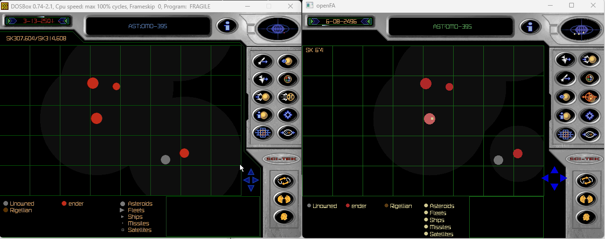
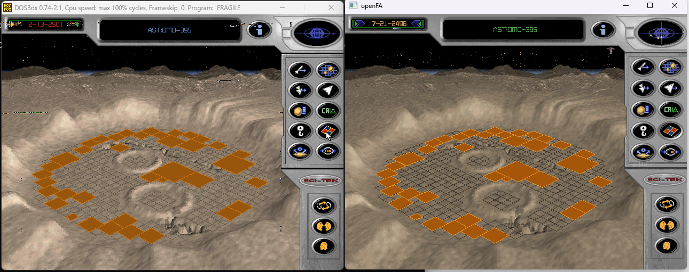
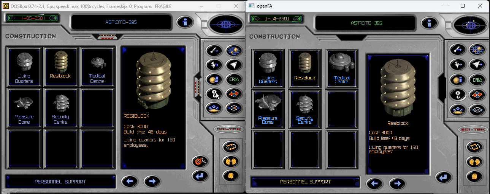

Technical notes on recovered behaviour, implementation and open questions.
OpenFA is a spare-time project with no fixed release schedule.
Confirmed Supported directly by code, data, saves or runtime capture.Inferred Matches observations but lacks direct proof.Unknown Not established.
· Rendering
The strategic map returns
The strategic map now uses recovered geometry and real saved state.

Original / OpenFA The same strategic-map state rendered side by side.
The original has a fitted full-sector view and an 8 by 5 cell zoom. Scale is quantised; the reference save produces a 21-pixel cell pitch.
Rendering and hit testing share this geometry. Size, ownership and sensors come from saved model state.
Confirmed result
Map origin and cell pitch match; zoomed asteroid centres differ by at most one pixel.
· Simulation archaeology
A saved world, unpacked
Saves expose simulation state that is not visible during play.
The importer validates the allocation graph and reads typed records for asteroids, factions, buildings, ships, personnel, diplomacy and simulation state.
Reference colonies are loaded from original relationships, not demo data. Unknown bytes are preserved losslessly.
Effect on implementation
Renderer, presenter and simulation use the same saved world.
· World rendering
Relief before decoration
Terrain, masks, grid and construction availability are separate states.

Original / OpenFA The same saved construction map used to compare relief, projection and blocked cells.
The saved construction map is kept bit-for-bit. Renderer masks use separate state.
Working rule
Visual changes require a target-client frame comparison.
· Reference capture
Learning the interface again
The interface work starts from captured screens, states and control behaviour.

Original / OpenFA Construction catalogue selection, content and navigation compared side by side.
The reference set covers the front end, map, construction, Sci-Tek, surveys, ships, finances, personnel and reports. Hidden mechanics require code or runtime evidence.
Screens use MVP: model state, presenter actions and a replaceable view. The renderer holds no navigation or fake game state.
· Project foundation
Laying the foundations
Core boundaries: deterministic simulation, legal asset import and a replaceable client.
The domain model is independent of files, graphics and input. Simulation uses fixed ticks, ordered commands and explicit random state.
Assets are imported from a legal installation. The repository and releases do not contain commercial game data.
OpenFA loads standard declarative content from a versioned .ofapkg
archive. Extensions are data-only and ordered by stable priority and ID.
AI helps navigate the decompilation. Tests replay asset, save and simulation cases; generated explanations remain hypotheses.
Architectural influence
OpenRA influenced the separation of simulation, content and presentation.
· The beginning
The first decoded image
OpenFA began with a decoder for the original intro graphics.
Fragile Allegiance.256Python decoderpixels
On 23 September 2023, a Python script decoded simple .256
files from the game intro. A full reconstruction of
Fragile Allegiance was not yet planned.
Original-game research artefacts
Results from the first decoder experiments
Early decoder output: incorrect palettes, offset tests and the final VGA conversion.
{kind=link}
{kind=link}
{kind=link}
{kind=link}
{kind=link}
{kind=link}